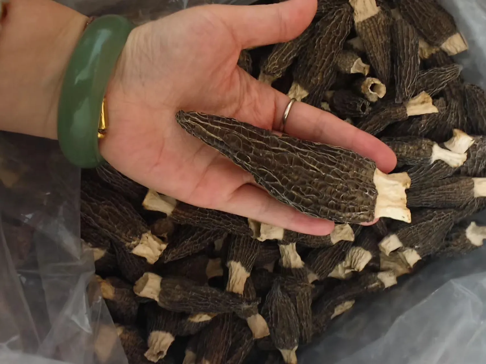
点击查看大图D152菌胜六妹
早熟、出菇早，重在控水与避重茬
D152为早熟型，突出出菇早、菇型好；北方棉被棚与冷棚均有应用案例。
- 管理优势：出菇进程靠前，商品菇外形较整齐。
- 重点短板：不抗重茬、不耐大水。
- 皖北要点：优先新茬或轮作地，催菇水必须看成熟度，避免一次性过量。
红线提醒不把“早熟”理解为提前大水；水量服从土质、底墒和下渗能力。
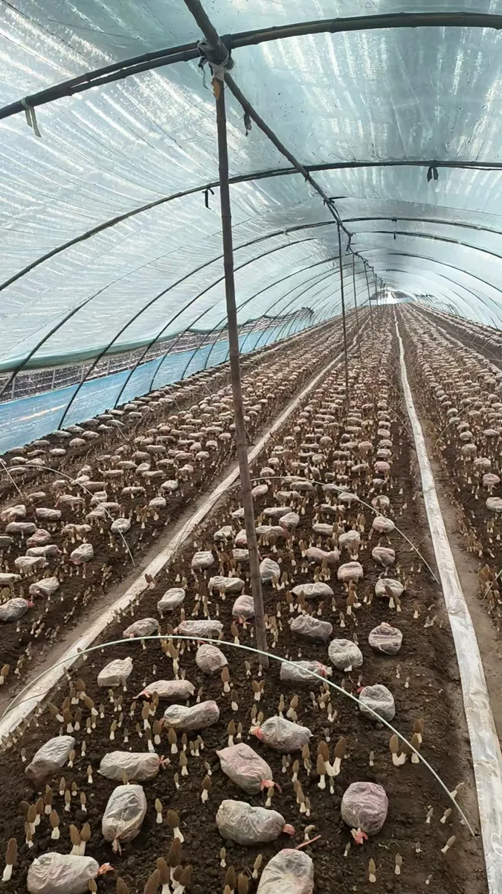
先看菌种适配，再看棚型能力，最后把操作落到“地温、墒情、天气预报和棚内实测”四项记录上。
网站统一使用菌种型号“D152、1201”。选种时需同时核对菌种批次、活力、纯度和皖北本地小区试验结果。

点击查看大图D152为早熟型，突出出菇早、菇型好；北方棉被棚与冷棚均有应用案例。
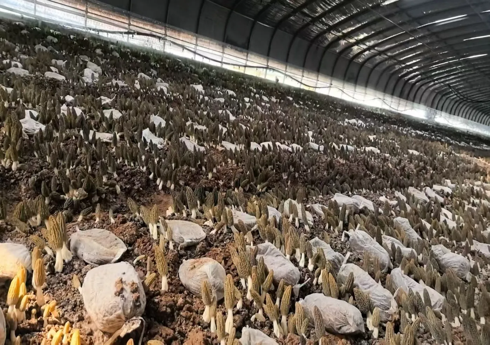
点击查看大图生长周期参考为95—115天，鲜菇褐青色、烘干后黑色，温度抗性和重茬适应性为其重点。
新茬地、希望出菇靠前，并且能把催菇水和棚内水分管细。
棚型多样、温度波动较大，或存在重茬历史但已经完成系统性风险治理。
先做小区试验；同批菌种留样；记录播种、营养袋、催菇和首菇日期。
冷棚的根本特点是没有保温被、夜间保温能力有限；棉被棚的优势是可通过保温被、光照和风口主动调节，但管理要求更细。
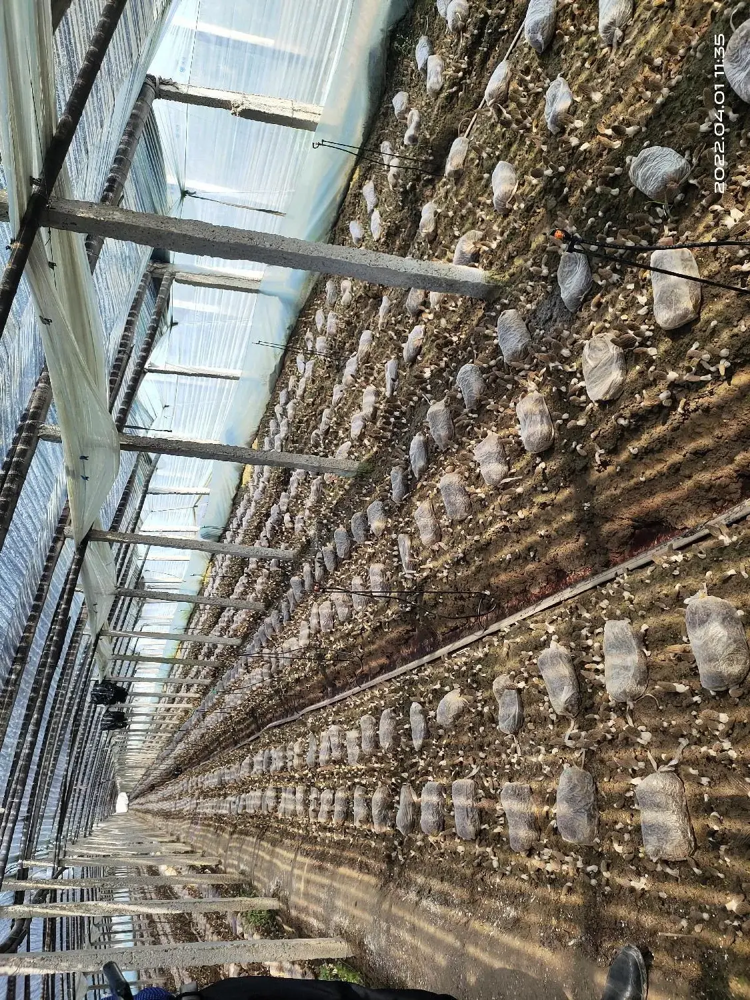
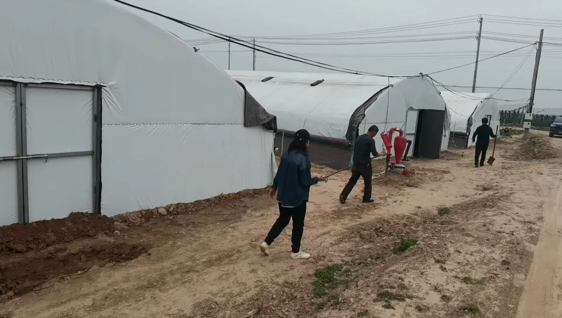
设施缓冲能力有限，必须让播种后的发菌阶段顺着降温趋势推进，并在催菇前同时核对菌丝成熟、床面原基和未来天气。
| 比较项目 | 冷棚 | 棉被棚 / 暖棚 |
|---|---|---|
| 核心逻辑 | 顺天时，提前看天气 | 主动调节，四项一起管 |
| 播种阶段 | 窗口期窄，避免过早或过晚 | 可用光照与保温帮助发菌，但仍要防高温 |
| 出菇阶段 | 逐步加大通风，防扫地风 | 见光不超温，通风不骤降湿 |
| 极端天气 | 高低温、大风、大雪承压弱 | 可缓冲，但依赖风口、棉被与安全加温预案 |
| 典型误区 | 只保湿、不通风；固定日期催菇 | 长期闷棚；把保温误解为持续升温 |
按蚌埠及皖北地区、11月中旬播种拟定。17个步骤，每步给出7—14天的工作窗口，配上具体操作与完成判断。
下列日期为参考排期，不是天气预报或生育期保证；相邻工作可交叉进行。播种推迟，放袋按实际播后天数顺延；催菇推迟，原基、幼菇和采收随之顺延。冷棚、棉被棚及光伏棚分别以本棚实测地温判断。
把地块、菌种和棚体先落实，再等合适的地温。
完成判断排水通畅，土壤风险和处理记录齐全。
完成判断用合格批次播种，不把不同批次混成一棚。
完成判断畦面墒情均匀，浇水、通风、保温均可正常操作。
以实际播种日计时，萌发、放袋和吃料逐项确认。
完成判断温度和墒情达标再播；不因进入日期窗口而强行播种。
完成判断菌丝正常扩展，无持续积水或快速扩大的污染斑。
完成判断袋口与土壤接触良好；记下每棚放袋日期和抽样初重。
完成判断以菌丝连接、料色与重量变化综合判断，不能只看袋子变轻。
下面是每两周的管理重点；巡棚、测温和天气检查每天都要做。
完成判断保温设施可靠，床面无积水，夜间低温有记录。
完成判断棚体安全，异常点标记并复查；低温时不强行催菇。
完成判断形成连续记录，能分清正常休菌、干旱与污染。
完成判断具备供水、排水和保温条件；尚未成熟的棚继续越冬管理。
后续节点随实际催菇日移动，冷棚与保温棚分别记录。
完成判断成熟度、地温、天气同时合适，才进入催菇操作。
完成判断土层湿润而畦面不积水；未达催菇条件的棚不执行。
完成判断原基持续发育，重点防干尖、积水和温湿度骤变。
完成判断菇体正常伸长，无持续高温、积水或集中萎蔫。
完成判断成熟一批采一批，采后及时处理，不等整个日期窗口结束。
完成判断采收结束、田间清洁、批次资料完整；未结束的棚顺延清园。
早晚测温并记最低温；晴天中午查最高温；巡查墒情、积水、污染和虫情；查看未来天气。上面的两周节点是复查重点，不是每两周才进棚一次。
技术参考：播种技术指导 · 2026年春季北方羊肚菌生产技术指导。操作条件参考公开技术意见，具体日期为本页面按蚌埠生产节奏编排。
先清茬、排水、测pH与EC，再定处理方案。辛硫磷用于地下害虫风险治理；生石灰或草木灰用于土壤处理时必须二选一，不能三样直接混在一起撒。
技术参考量：旋耕前均匀撒施，再混入土层；旋耕深度不少于15厘米。只在所购产品标签允许、当地植保人员确认后使用。
另有资料记录“辛硫磷乳油2 kg/亩随水”，但没有标明乳油浓度，故不作为通用处方。若“辛60”指60%制剂，绝不能照搬3%颗粒剂15—20 kg/亩；请按瓶身登记作物、靶标和标签用量核算。
数字引自DB33/T 1378—2024，属于外地标准参考。皖北必须结合本地土样复核，不能把两者叠加使用。
辛硫磷不得与石灰、草木灰等碱性材料自行混配；分开操作，间隔与防护按产品标签及当地农技、植保指导执行。播种后尤其是出菇期，不使用未登记或来源不明的农药。
皖北应用前应结合土样、产品标签和当地植保指导复核；DB33/T 1378—2024仅作小区试验参考。
以下仅作制定巡棚阈值的参考，现场以棚内传感器和长势为准。
| 环节 | 参考范围 | 现场判断 | 需要避免 |
|---|---|---|---|
| 选地 | 土壤pH 5.5—8.5；EC（1:5）宜低于0.8 dS/m | 排水、土质、前茬和水源同时合格 | 烂泥田、硬底田、污染水 |
| 整地播种 | 旋耕深度15厘米以上；大土块不超过3厘米 | 覆土严密、不露菌种，播后观察萌发 | 只追求低温而过度推迟播期 |
| 营养袋发菌 | 8—16℃可发菌，12—16℃吃料较好 | 正常温度下一周仍不吃料要排查 | 放袋后再大水补墒 |
| 催菇水 | 20厘米土层湿透；黏土宜少量多次 | 木棍可轻松下插，表面无长期明水 | D152大水、低洼积水、过早操作 |
| 出菇温湿 | 低温养菇常用12—18℃；前期湿度90%—95%，3厘米后降至85%—90% | 原基、幼菇和成菇分阶段微调 | 高温高湿、忽干忽湿 |
| 通风 | 侧风口宜高于地面80厘米；幼菇后逐步加大 | 结合CO₂、菇柄长度和湿度判断 | 原基期直吹地面的“扫地风” |
围绕菌种制作与材料采购的八个关键环节，按操作顺序逐项核对。生产时结合本单位设备、质量标准和批次记录执行。
接种工具、容器和操作台按制度消毒；接种区与污染区分开，人员操作前后完成清洁。
核对来源、代次和品种特征，观察菌丝均匀度、色泽、长势及有无杂菌斑。
兼顾营养组成、含水量、通气性和pH，使菌丝能够均匀、快速并稳定生长。
按装量和设备设定温度、时间与排气程序，并核验灭菌效果，避免出现冷点。
温度、湿度、避光与通风协同控制，发现升温、积水或异常气味及时分区排查。
检查外观、菌丝完整性与杂菌污染，必要时结合培养测试，合格批次方可使用。
把母种、配方、灭菌、接种、培养、检测和去向串成批次记录，异常时能够回查。
从安全性、适配性、稳定供应和成本综合判断；到货后做感官、理化和批次验收。
这是蚌埠及皖北常见越冬节奏示例，不是固定播期表。冷棚尤其要服从当年温度趋势，棉被棚也不能脱离地温和菌丝成熟度。
以下图谱用于田间初筛，不代替实验室鉴定。发现异常先标记病健交界、停止带土走动，并同步记录温湿度、地温和最近三天操作。
高温、高湿、积水和通风死角往往会放大风险
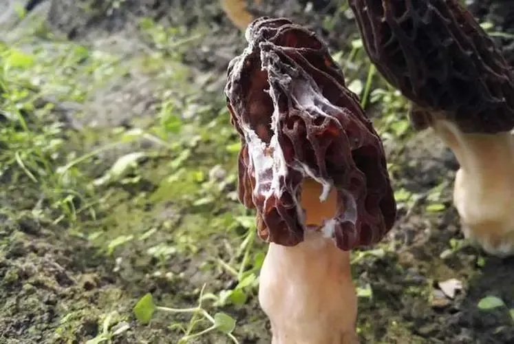
病害 01床面或菇体出现白色霉层并扩展。先查高温高湿、积水和通风死角，立即分区标记。
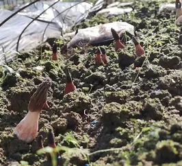
病害 02菌柄基部出现红褐色异常、长势转弱。记录水分和温度变化，沿病健交界隔离观察。
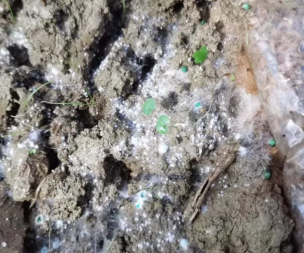
病害 03蛛网状菌丝在床面或菇体间蔓延。减少人员与工具跨区，避免带病残体和土粒扩散。
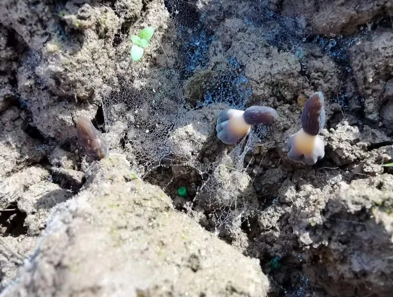
病害 04菌柄基部变黑、萎缩或软弱。重点排查低洼积水、长时间高湿以及换气不足。
清洁田园、物理监测和播前治理优先
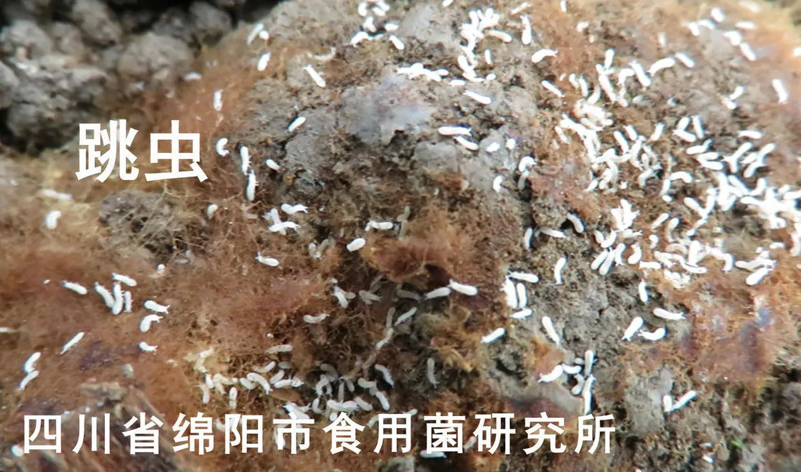
虫害 01床面有细小虫体，受惊会跳动，常聚集在潮湿区域。先做粘捕和局部数量记录。
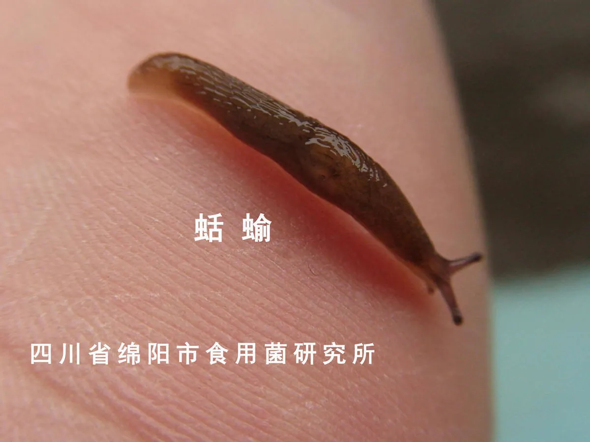
虫害 02菇体有啃食缺口，床面或通道留有黏液痕。夜间巡查低洼潮湿处，并清理藏匿物。
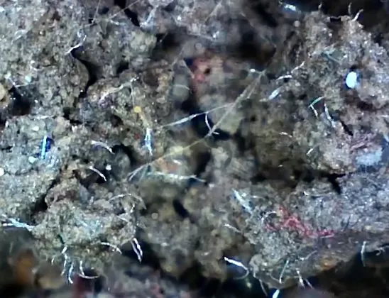
虫害 03肉眼不能仅凭一张床面照片确诊；出现成片衰弱、腐烂时，应取病健交界样品送检。
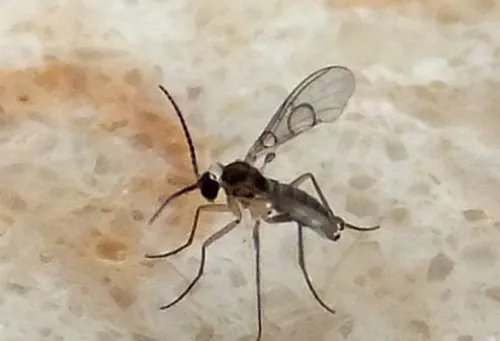
虫害 04潮湿有机物附近常有小型成虫或幼虫。用粘虫板监测趋势，同时清理残菇和污染物。
优先轮作、高温闷棚、清洁田园和经确认的土壤处理。
温、光、气、湿协同，避免高温高湿和床面长时间明水。
拍全棚、病健交界和近景；工具分区，不把病土带向健康区。
食用菌出菇期尤其谨慎，只按登记标签和当地植保指导处理。
以蚌埠气象站（WMO 58221）日值为基础，汇总2020/21—2024/25五个完整种植季。站外气温用于判断大趋势，棚内仍需独立布设温湿度记录。
出现在2020/21季1月，寒潮前需提前检查保温、棚膜与加固。
两个月是越冬养菌、防冻与水分稳定的核心阶段。
历史日最高达到32.0°C，晴天棚内升温通常更快。
单位：°C；点击图例可显示或隐藏某一季
10—11月重点看播种窗口；12月—次年1月防寒并保持发菌环境稳定；2月评估催菇条件；3月重点防棚内骤热。
| 月份 | 月均温 | 平均低温 | 极端低温 | 低于0°C天数 |
|---|
“低于0°C天数”按当日日最低气温统计；站外气温不等于棚内温度。
| 月份 | 五季月均温 | 平均最低温 | 平均最高温 | 五季极端最低 | 管理关键词 |
|---|---|---|---|---|---|
| 10月 | 17.2°C | 12.0°C | 23.5°C | 2.8°C | 选地 · 整棚 |
| 11月 | 11.6°C | 6.5°C | 17.8°C | −3.6°C | 播种 · 看地温 |
| 12月 | 3.6°C | −2.3°C | 9.8°C | −11.2°C | 发菌 · 防寒潮 |
| 1月 | 3.4°C | −2.1°C | 9.5°C | −11.5°C | 成熟度观察 |
| 2月 | 5.5°C | 0.5°C | 10.8°C | −9.0°C | 催菇前评估 |
| 3月 | 11.9°C | 6.2°C | 17.8°C | −1.5°C | 通风 · 采收 |
采用Meteostat蚌埠站58221逐日数据（2020-10-01至2025-03-31），由本站按月和越冬季汇总。仅用于历史趋势示例；当季操作必须结合短期预报、棚内温湿度、地温与作物状态。
出现问题不要立即“大水、大药、大通风”。先拍全棚、床面和近景，记录温湿度、地温、用水和最近三天操作。
先查：菌种活力、土壤含水量、地温、覆土是否过厚或露种。
处理：先分区标记并找原因；放营养袋前补足必要水分，避免盲目全棚操作。
先查：温度是否处于8—16℃、划口是否贴土、菌丝是否有污染。
处理：核对袋温和床面状态；温度偏低可适度见光提温，超过18℃则加强上部通风。
先查：浇水是否过早、营养袋是否充分吸收、菌霜是否褪去、未来天气是否稳定。
处理：保持环境稳定并分区观察，不连续追加大水；D152尤其警惕水分过量。
先查：CO₂积累、顶风口是否有效、棚内光照是否长期不足。
处理：从高位小幅增加换气，随菇体长大逐步加大；原基期避免扫地风。
先查：高温高湿、床面积水、通风死角和病健交界。
处理：先隔离病区、降低环境波动，按现场情况开展专业病虫处置。